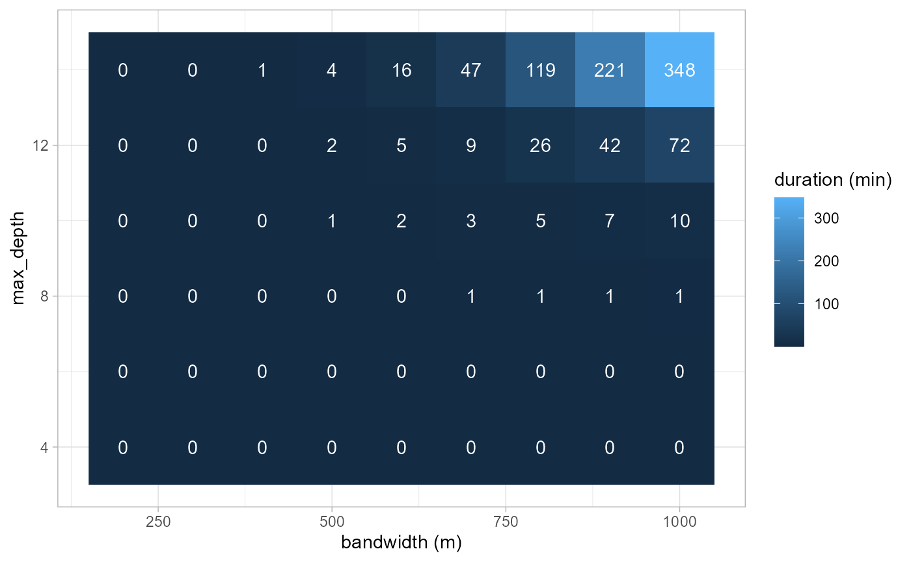
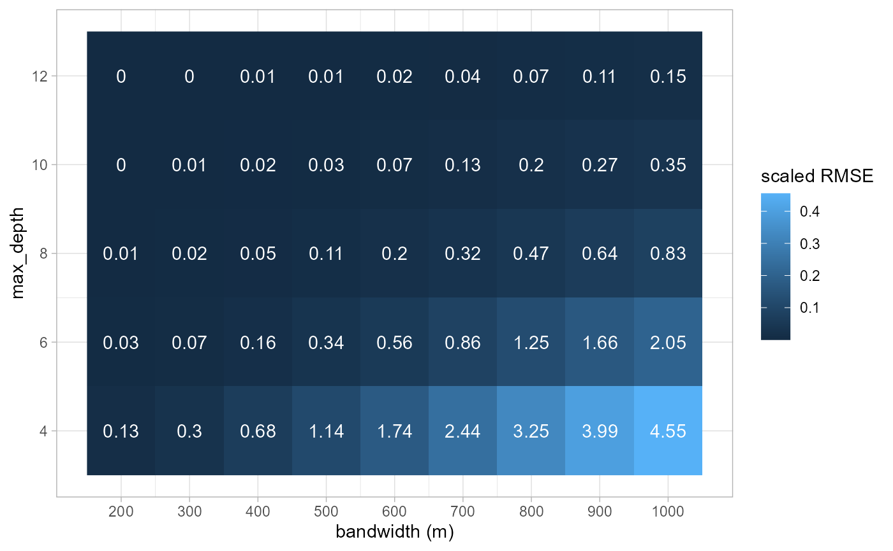
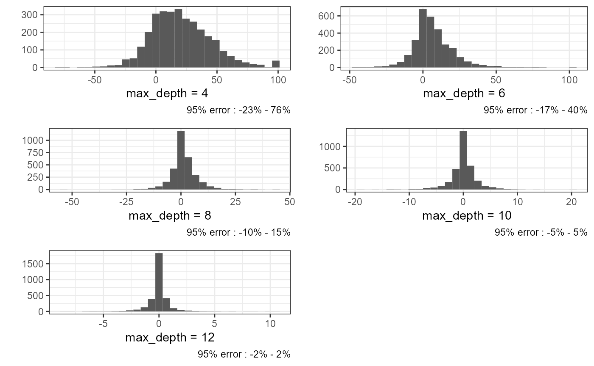
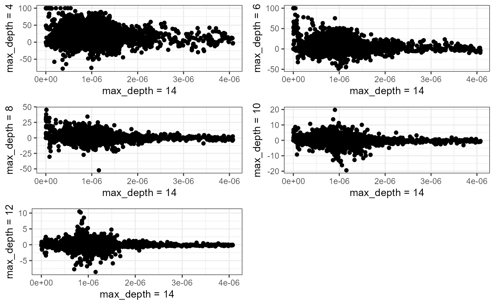
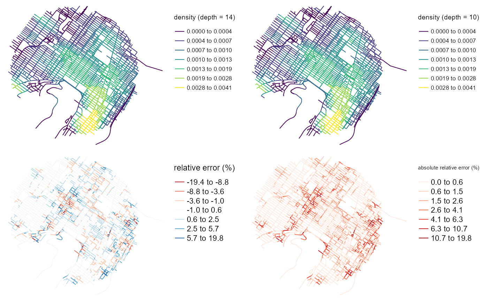
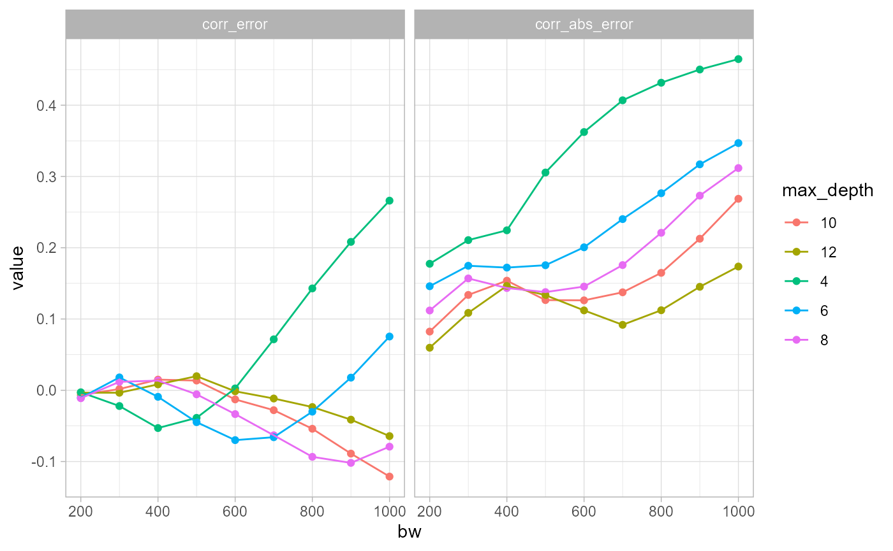
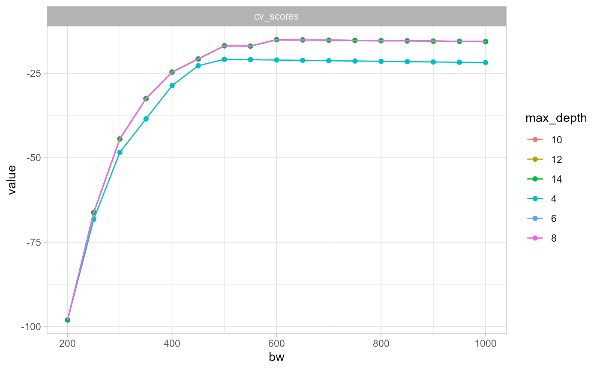

vignettes/web_vignettes/SpeedVSprecision.Rmd
SpeedVSprecision.RmdIn this vignette, we quantify the impact of the parameter
max_dept on the precision of the calculation of the
continuous NKDE.
The continuous NKDE is obtained by a recursive algorithm correcting the density values along the network when a intersection is encountered. This is the only NKDE that needs to go backward during its calculation and this makes it the slowest approach in terms of computation time.
The parameter max_dept can be used to limit the number
of recursions at the cost of a loss in precision. Indeed, at each
intersection the density is split in each direction. After a few
intersections, it could be considered safe to stop the calculation. The
gain in precision is likely not worth the computation time.
In this vignette, we gives some insights about the size of the impact
of the parameter max_dept.
We will calculate the impact of the parameter max_dept
given several bandwidth for the data bike_accidents.
For each bandwidth, we will recalculate the density with a
max_dept value going from 4 to 14. We will then compare the
densities obtained with the reference value (highest
max_dept). The differences will be summarized with a scaled
root mean square error.
\[ SRMSE = \sqrt(\frac{{RMSE}}{\delta}) \] with \(\delta\) equal to the interquartile range for the reference density values.
We start here by loading the data and preparing the parameters.
# first load data and packages
library(sf)
library(spNetwork)
library(future)
library(future.apply)
library(ggplot2)
library(tmap)
library(dplyr)
data(mtl_network)
data(bike_accidents)
lixels <- lixelize_lines(mtl_network,200,mindist = 50)
samples <- lines_center(lixels)
# we select here the bandwidths for calculation
bws <- seq(200,1000,100)
# we select here the max_depth values
max_depths <- seq(4,14,2)
# we create here the dataframe will all the parameters
params_df <- expand.grid(
bw = bws,
max_depth = max_depths
)
# we shuffle the dataframe to make the multicore processing
# balanced
params_df <- params_df[sample(1:nrow(params_df)),]
params_df$index <- 1:nrow(params_df)
items <- split(params_df, 1:nrow(params_df))We can now start the heavy work. We will use multiprocessing to reduce calculation time.
future::plan(future::multisession(workers=12))
progressr::with_progress({
p <- progressr::progressor(along = items)
all_densities <- future_lapply(items, function(row) {
t1 <- system.time({
values <- nkde(mtl_network,
events = bike_accidents,
w = rep(1,nrow(bike_accidents)),
samples = samples,
kernel_name = "quartic",
bw = row$bw, div= "bw",
adaptive = FALSE,
method = "continuous", digits = 1, tol = 1,
max_depth = row$max_depth,
agg = 10,
grid_shape = c(1,1),
verbose=FALSE)
})
p(sprintf("i=%g", row$index))
return(list(values, t1[[3]]))
}, future.packages = c("spNetwork"))
})We start here by assessing how much the calculation time is affected
by the increase in the bandwidth and the max_depth
parameter.
params_df$durations <- sapply(all_densities, function(i){i[[2]]}) / 60
ggplot(params_df) +
geom_raster(aes(x = bw, y = max_depth, fill = durations), size = 2) +
geom_text(aes(x = bw, y = max_depth, label = round(durations)), color = 'white') +
theme_light() +
labs(x = 'bandwidth (m)', y = 'max_depth', fill = 'duration (min)')
As one can see, the calculation time (in minutes) grows fast with the
increasing bandwidth and max_depth. For a small dataset as
presented in this vignette and a bandwidth of 1000m, using a
max_depth of 8 instead of 10 can divide the calculation
time by 10 and by 300 in comparison with the value of 14.
The reduction in calculation time is very interesting. However, we must check now how much it affects the estimated densities.
references <- subset(params_df, params_df$max_depth == 14)
comparisons <- subset(params_df, params_df$max_depth != 14)
scores <- t(sapply(1:nrow(comparisons), function(i){
row <- comparisons[i,]
idx1 <- row$index
comp <- all_densities[[idx1]][[1]]
idx2 <- references$index[references$bw == row$bw]
ref <- all_densities[[idx2]][[1]]
range <- quantile(ref, probs = 0.75) - quantile(ref, probs = 0.25)
error <- sqrt(mean((ref - comp) ** 2)) / range
return(c(row$bw, row$max_dept, error))
}))
scores <- data.frame(scores)
names(scores) <- c('bw', 'max_depth', 'error')
ggplot(scores) +
geom_raster(aes(x = bw, y = max_depth, fill = error), size = 2) +
geom_text(aes(x = bw, y = max_depth, label = round(error*10,2)), color = 'white') +
theme_light() +
scale_y_continuous(breaks = unique(comparisons$max_depth)) +
scale_x_continuous(breaks = unique(comparisons$bw)) +
labs(x = 'bandwidth (m)', y = 'max_depth', fill = 'scaled RMSE')
As expected, the scaled RMSE is higher with a larger bandwidth and a
smaller max_depth. Considering the link with the bandwidth,
we will focus on the results obtained with the largest one (1000m).
To do so, we calculate the relative differences between the reference
values (obtained with max_depth = 14) and the approximate
values.
ok_ids <- subset(params_df, params_df$bw == 1000 & params_df$max_depth != 14)
reference <- subset(params_df, params_df$bw == 1000 & params_df$max_depth == 14)
ok_ids <- ok_ids[order(ok_ids$max_depth),]
ref <- all_densities[reference$index][[1]]
comparison <- all_densities[ok_ids$index]
plots <- lapply(1:length(comparison), function(i){
df <- data.frame(
ref = ref[[1]],
comp = comparison[[i]][[1]],
diff = (ref[[1]] - comparison[[i]][[1]]) / ref[[1]] * 100
)
vals <- round(quantile(df$diff, probs = c(0.025, 0.975), na.rm = TRUE))
plot <- ggplot(df) +
geom_histogram(aes(x = diff)) +
theme_bw() +
labs(y = '', x = paste0('max_depth = ',ok_ids$max_depth[[i]]),
caption = paste0('95% error : ', vals[[1]], '% ; ', vals[[2]], '%'))
return(plot)
})
ggpubr::ggarrange(plotlist = plots, nrow = 3, ncol = 2)
As expected, we can observe a greatest effect when
max_depth is very small. With a max_depth at
8, we have 95% of the relative error comprised between -10% and +15% of
the local density. On average we can see that the range of the relative
error is multiplied by 2.5 each time we decrease the
max_depth by two.
plots <- lapply(1:length(comparison), function(i){
df <- data.frame(
ref = ref[[1]],
comp = comparison[[i]][[1]],
diff = (ref[[1]] - comparison[[i]][[1]]) / ref[[1]] * 100
)
plot <- ggplot(df) +
geom_point(aes(x = ref, y = diff)) +
labs(x = 'max_depth = 14',
y = paste0('max_depth = ',ok_ids$max_dept[[i]])
) +
theme_bw()
return(plot)
})
ggpubr::ggarrange(plotlist = plots, nrow = 3, ncol = 2) The biggest relative differences are obtained for lixels with low densities. This is not surprising considering the fact that a small change in density leads to a great relative error for lixel with small estimated densities.
lixels$density_14 <- ref[[1]]
id <- ok_ids[ok_ids$max_depth == 10,]$index
lixels$density_10 <- all_densities[[id]][[1]]
lixels$error <- lixels$density_14 - lixels$density_10
lixels$rel_error <- round(lixels$error / lixels$density_14 * 100,1)
lixels$rel_error <- ifelse(is.na(lixels$rel_error), 0, lixels$rel_error)
lixels$rel_error_abs <- abs(lixels$rel_error)
lixels$density_14 <- lixels$density_14 * 1000
lixels$density_10 <- lixels$density_10 * 1000
library(classInt)
library(viridis)
densities <- c(lixels$density_14, lixels$density_10)
color_breaks <- classIntervals(densities, n = 7, style = "kmeans")
map1 <- tm_shape(lixels) +
tm_lines('density_14', breaks = color_breaks$brks,
palette = viridis(7), title.col = 'density (depth = 14)') +
tm_layout(legend.outside = TRUE, frame = FALSE)
map2 <- tm_shape(lixels) +
tm_lines('density_10', breaks = color_breaks$brks,
palette = viridis(7), title.col = 'density (depth = 10)') +
tm_layout(legend.outside = TRUE, frame = FALSE)
map3 <- tm_shape(lixels) +
tm_lines('rel_error', n = 7, style = 'jenks',
palette = 'RdBu', title.col = 'relative error (%)') +
tm_layout(legend.outside = TRUE, frame = FALSE)
map4 <- tm_shape(lixels) +
tm_lines('rel_error_abs', n = 7, style = 'jenks',
palette = 'Reds', title.col = 'absolute relative error (%)') +
tm_layout(legend.outside = TRUE, frame = FALSE)
tmap_arrange(map1, map2, map3, map4)
The four maps above show that the error tend to not aggregate at places with high or low densities. This results is important because it suggests that densities and error are not strongly correlated. However, we can see some spatial autocorrelation in the errors.
ok_ids <- subset(params_df, params_df$max_depth != 14)
reference <- subset(params_df, params_df$max_depth == 14)
corr_scores <- t(sapply(1:nrow(ok_ids), function(i){
row <- ok_ids[i,]
comp <- subset(reference, reference$bw == row$bw)
dens_ref <- all_densities[[comp$index]][[1]]
dens_approx <- all_densities[[row$index]][[1]]
error_abs <- abs(dens_ref - dens_approx)
error <- dens_ref - dens_approx
return(c(row$bw, row$max_depth,cor(dens_ref, error), cor(dens_ref, error_abs)))
}))
corr_scores <- data.frame(corr_scores)
names(corr_scores) <- c('bw', 'max_depth', 'corr_error', 'corr_abs_error')
corr_scores$max_depth <- as.character(corr_scores$max_depth)
corr_scores <- reshape2::melt(corr_scores, id = c('bw', 'max_depth'))
corr_scores$variable <- as.factor(corr_scores$variable)
ggplot(corr_scores) +
geom_point(aes(x = bw, y = value, color = max_depth)) +
geom_line(aes(x = bw, y = value, color = max_depth, group = max_depth)) +
facet_wrap(vars(variable)) +
theme_light()
The two plots above illustrate the correlations between the reference
density (max_depth = 14) and the error between the
approximated density and the reference density. One displays the
correlation with the natural error and the second with the absolute
error. It is interesting to see that the correlation with the natural
error is much greater for small values of max_depth. A
value of 8 seems to limit the correlation. In other words, selecting
max_depth = 8 can limit greatly the risk that the error
caused by simplification is correlated with the real density.
However, the correlations with the absolute errors are all strongly increasing with the bandwidth. This means that at places with higher densities, we might expect higher over or underestimation of the expected density.
Lastly, we want to asses the impact of the max_depth
parameter on the bandwidth selection.
items <- c(4,6,8,10,12,14)
df_params2 <- data.frame(
max_depth = c(4,6,8,10,12,14),
index = c(1,2,3,4,5,6)
)
items <- split(df_params2, 1:nrow(df_params2))
future::plan(future::multisession(workers=6))
progressr::with_progress({
p <- progressr::progressor(along = items)
all_bw_scores <- future_lapply(items, function(row) {
values <- bw_cv_likelihood_calc(
bws = seq(200,1000,50),
lines = mtl_network,
events = bike_accidents,
w = rep(1,nrow(bike_accidents)),
kernel_name = "quartic",
method = 'continuous',
adaptive = FALSE,
max_depth = row$max_depth,
digits = 1, tol = 1,
agg = 10,
grid_shape = c(1,1),
verbose=FALSE
)
p(sprintf("i=%g", row$index))
return(values)
}, future.packages = c("spNetwork"))
})
all_bw_scores <- do.call(rbind, all_bw_scores)
all_bw_scores$max_depth <- rep(c(4,6,8,10,12,14), each=length(seq(200,1000,50)))
all_bw_scores <- reshape2::melt(all_bw_scores, id = c('bw', 'max_depth'))
all_bw_scores$variable <- as.factor(all_bw_scores$variable)
all_bw_scores$max_depth <- as.character(all_bw_scores$max_depth)
ggplot(all_bw_scores) +
geom_point(aes(x = bw, y = value, color = max_depth)) +
geom_line(aes(x = bw, y = value, color = max_depth, group = max_depth)) +
facet_wrap(vars(variable)) +
theme_light()
This last results is very interesting. It suggests that the simplification in density calculation affects only marginally the bandwidth selection process.
Here are the conclusions of this short analysis :
max_depth can be used to reduce
significantly the calculation time.